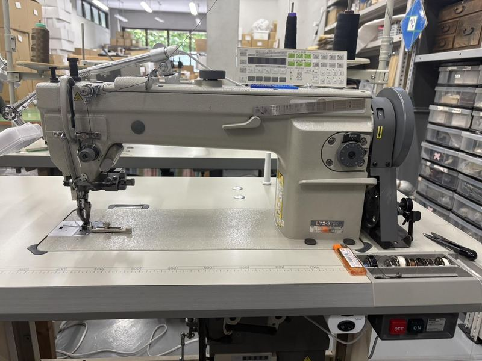
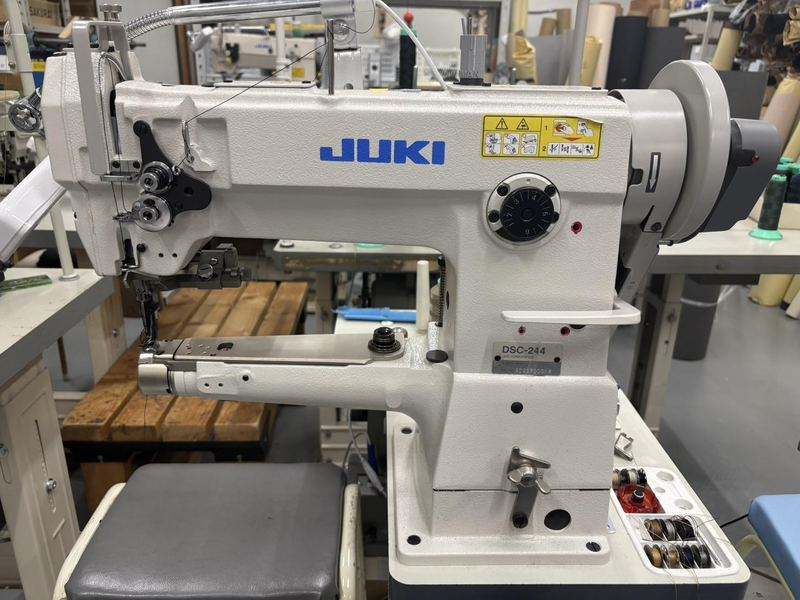
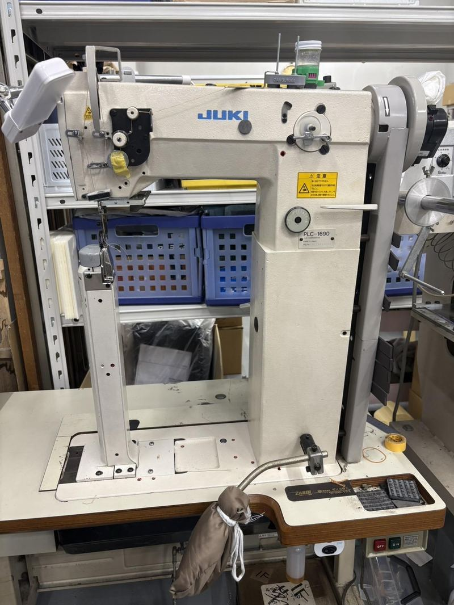
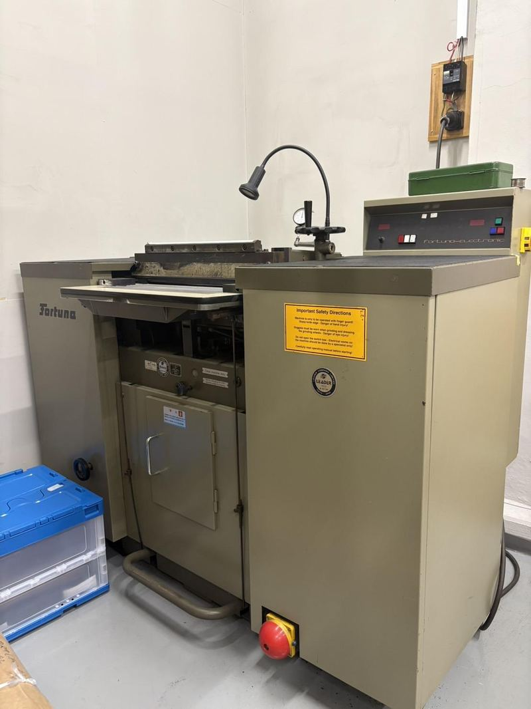
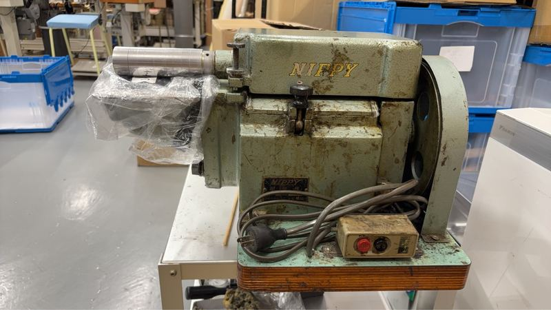
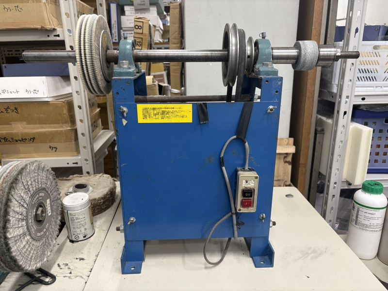

01
多様なブランド対応力
革鞄・革小物を中心に、国内ブランド20社と長く取引を続けています。

1966年創業の革製造工房を、B supplyが事業承継しました。60年続く職人の技術に私たちの営業力とデジタル基盤を組み合わせ、町工場から世界に通用するブランドを育てます。
1966年、東京の下町で、革製造の工房が始まりました。
以来60年、職人たちが手で守ってきた技術があります。
その技術と想いを、
私たちが次の時代へ引き継ぎます。
東京都墨田区で株式会社美嚢を設立
60年間、国内外の一流ブランドの革製品（鞄・財布等）を製造し続ける
B supplyが事業を承継し、60年続く職人の技術に、B supplyの営業力・マーケティング力・デジタル基盤を組み合わせ成長を加速
60年間、一流ブランドに選ばれ続けてきました。全商品を国内で製造しています。
SIX REASONS
01
革鞄・革小物を中心に、国内ブランド20社と長く取引を続けています。
02
牛革（カーフ・ヌメ・型押し）、羊革、山羊革、鹿革、馬革（コードバン）、豚革のほか、クロコダイル・パイソンなどのエキゾチックレザーにも対応しています。
03
全商品を日本国内で生産しており、海外での生産はありません。裁断から仕上げまで、すべての工程を国内の工房で一貫して行っています。
04
一点ずつ品質を確認し、仕上がりのばらつきを抑えています。
05
国内で経験を積んだ職人が製造を担当しています。長年培ってきた技術と感覚を活かし、細部まで丁寧に仕上げます。
06
専任の営業担当が継続して窓口を務め、同じ職人チームが製造を担当します。長くお付き合いいただけるよう、一つひとつ丁寧に対応しています。
EQUIPMENT
すべての製造工程を墨田区の工房で完結させています。職人が裁断・縫製・仕上げの各工程を担える多能工体制のため、複雑な仕様や難しいデザインにも対応できます。

01革や厚手の素材を縫う主力のミシンです。まっすぐな縫い目を安定して縫えます。
 02
02袋物や筒状の製品を、立体のまま縫い進められます。

03上下と針の3か所で生地を送るため、厚手の革もずれずに縫えます。

04柱状の台を使い、鞄の底や側面などの曲面を縫います。
 05
05鞄の大きなパーツを裁断する、業界で標準的な機械です。

06厚い革を、必要な厚みに均一に薄くします。
 07
07革の縁を均一な厚みに薄く削ります。仕上がりを左右する大切な下準備です。
 08
08囲いの中で、接着剤をむらなく吹き付けます。

09ローラーで、貼り合わせる前の糊をすばやく均一に塗ります。
 10
10ロゴの刻印や型押しに使います。温度を調整し、押し具合をそろえます。

11革の縁や表面を磨き、仕上げます。
OTHER BUSINESS